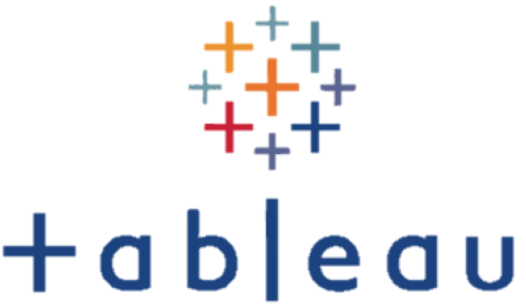

陳宣卉
商業分析師、數據分析師、數據工程師
台北市, 內湖區
pure20071230@gmail.com
0958-220-398
Skills


Languages
中文 : 精通
台語 : 流利
英文 : 略懂
Education
資策會 Data Engineer 巨量資料分析就業養成班
2018 / 10 - 2019 / 03
經由636小時的密集訓練，學習Python、R程式語言，數據挖掘以及資料探勘，資料庫系統SQL Server、Docker環境、 Linux系統以及Hadoop生態系統之建置，Python機器學習、HTML、CSS、JavaScript和D3.js視覺化資料呈現及網頁建置
經濟部AIGO解題競賽
由消費者在購物網站之活動行為分析行銷決策
May 2019 - Jun 2019
消費者在企業行銷後來網站消費，其行為可分為許多路徑，例如商品加入購物車但最後未購買，有些行銷手段可有效提高回購率，但行銷決策以人為判斷為主，期望開發AI智慧工具進行會員管理、分群、預測購買週期、適時精準推薦與行銷，以提高購買率與客戶黏著度。
資策會專題
玉山人工智慧公開挑戰賽 個人金融商品交易預測
本隊於Public Leaderboard評測獲取 21 名 總參賽隊伍共 1121 隊
Jan 2019 - Mar 2019
比賽提供顧客在玉山官網上120天的瀏覽行為、基本屬性及交易/申請的去識別化行為資料，預測顧客在之後的30天與玉山有哪些金融商品的往來，預測金融商品包含信用卡、信貸、信託及外匯四種商品。
證券公司數據分析提案
Jan 2019
我們預計透過 20 個欄位，透過大數據分析，協助證券公司更清楚清楚客戶畫像。通過分析客户的帳戶狀態、賬户價值、交易習慣、投資偏好以及投資收益，來進行客户類分群，從而發現客户交易模式類型，找出最有價值和盈利潛力的客户群, 以及他們最需要的服務, 更好地配置資源和政策, 改進服務,抓住最有價值的客户。
期末小組專題
移動裝置 APP 廣告點擊預測下載行為
Jan 2019 - Mar 2019
本組資料集取自TalkingData，為三天內約1.8億筆廣告點擊行為與App下載行為之關係，主要目標為預測未來事件之下載可能性，次之透過數據分析嘗試尋找點擊詐騙之模式。特徵主要為類別標籤，包括用戶端之基本屬性，如：使用者IP、投放於何種App、用戶端裝置和作業系統等，另外有廣告點擊時間和有下載者之下載時間戳記，針對特定IP過多點擊廣告最後卻沒有下載，視為可能之下載流量詐騙行為之現象，本組更透過僅七欄的資料試圖找到其中可能隱藏的商業訊息。
個人期中專題：以兩岸為例大數據相關工作地區、能力與薪資分析
Dec 2018
透過 python 爬蟲程式將 104 人力銀行及對岸前程無憂招聘網有關大數據相關工作資訊爬下（對岸資料僅限一線城市包住相關工作機會），並應用 R 語言進行分析，分析內容包含台灣地區北中南及對岸數據相關工作的薪資行情、不同地區的工作機會量及需要具備的能力。